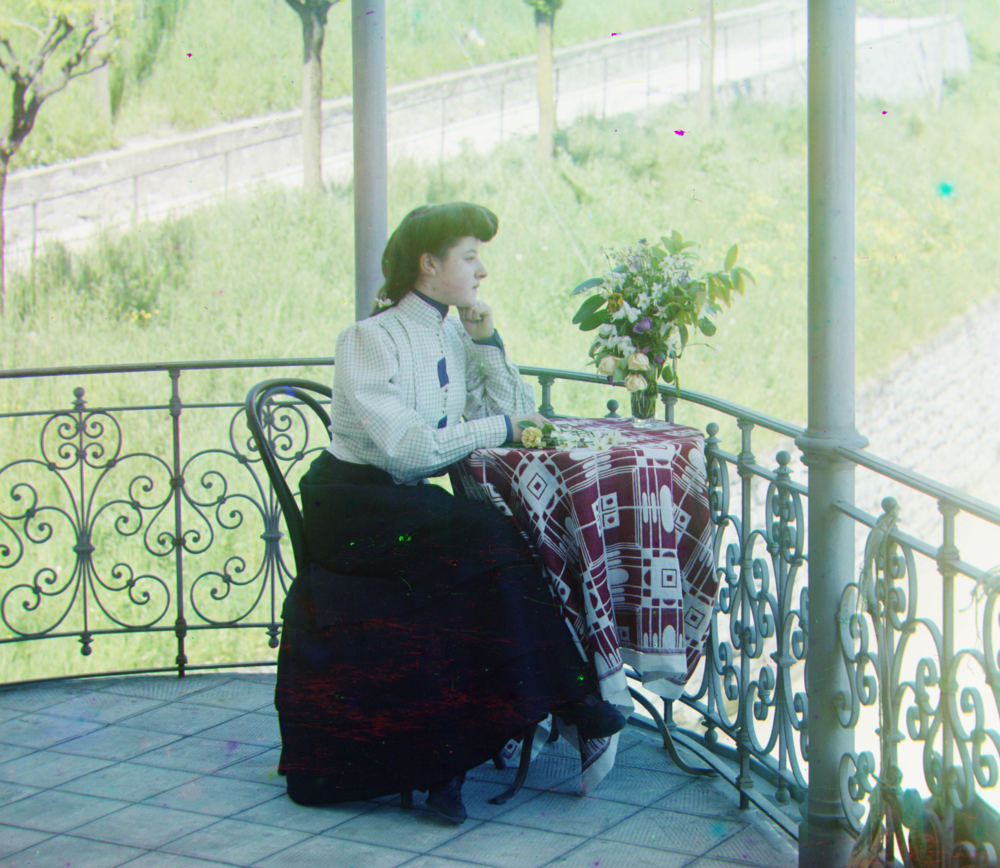

Cathedral
Red Displacement: [12, 3]
Green Displacement: [5, 2]
Time: 0.81 sec
Monastery
Red Displacement: [3, 2]
Green Displacement: [-3, 2]
Time: 0.55 sec
Tobolsk
Red Displacement: [6, 3]
Green Displacement: [3, 3]
Time: 0.51 sec

Church
Red Displacement: [58, -4]
Green Displacement: [25, 4]
Time: 48.47 sec

Emir
Red Displacement: [93, -305]
Green Displacement: [49, 24]
Time: 52.85 sec

Harvesters
Red Displacement: [124, 13]
Green Displacement: [59, 16]
Time: 51.93 sec

Icon
Red Displacement: [89, 23]
Green Displacement: [41, 17]
Time: 53.47 sec


Italil
Red Displacement: [76, 35]
Green Displacement: [38, 21]
Time: 52.96 sec

Lastochikino
Red Displacement: [75, -8]
Green Displacement: [-2, -2]
Time: 52.64 sec

Lugano
Red Displacement: [92, -29]
Green Displacement: [41, -16]
Time: 54.82 sec

Melons
Red Displacement: [178, 13]
Green Displacement: [81, 10]
Time: 53.93 sec

Self Portrait
Red Displacement: [176, 37]
Green Displacement: [78, 29]
Time: 54.48 sec

Siren
Red Displacement: [95, -25]
Green Displacement: [49, -6]
Time: 54.45 sec

Three Generations
Red Displacement: [112, 11]
Green Displacement: [53, 14]
Time: 51.05 sec